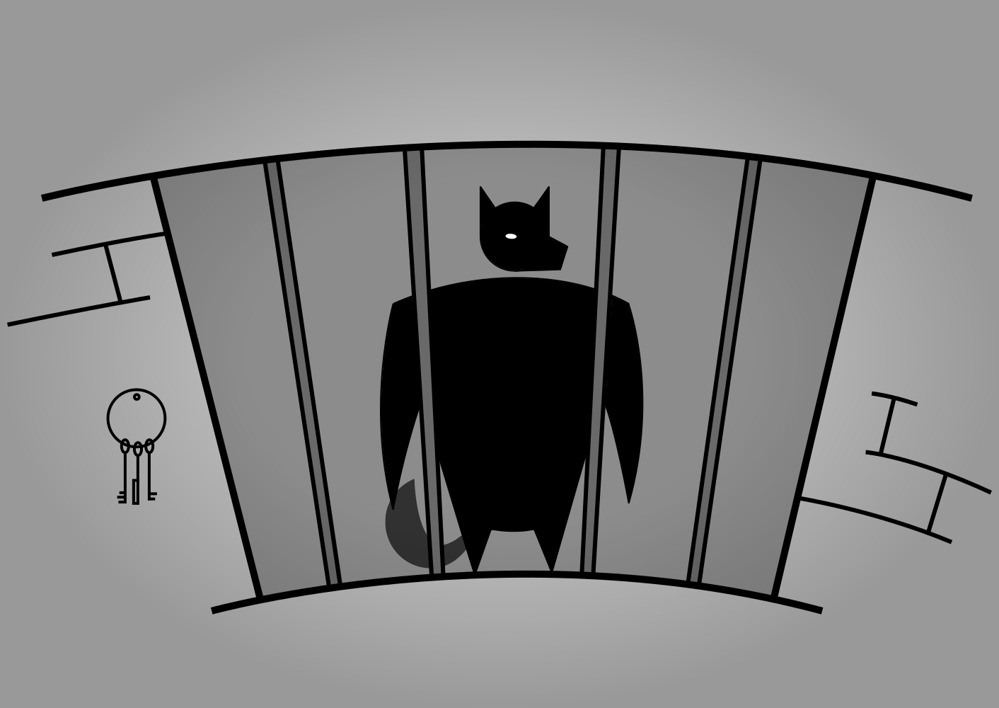

The Wolf Finally 'Huffs'Read the story. ⇓
A. Wolf

Once upon a time there was an old mother pig who had three little pigs and not enough food to feed them. So when they were old enough, she sent them out into the world to seek their fortunes. The first little pig was very lazy. He didn't want to work at all and he built his house out of straw. The second little pig worked a little bit harder but he was somewhat lazy too and he built his house out of sticks. Then, they sang and danced and played together the rest of the day. The third little pig worked hard all day and built his house with bricks. It was a sturdy house complete with a fine fireplace and chimney. It looked like it could withstand the strongest winds. The next day, a wolf happened to pass by the lane where the three little pigs lived; and he saw the straw house, and he smelled the pig inside. He thought the pig would make a mighty fine meal and his mouth began to water. So he knocked on the door and said: "Little pig! Little pig! Let me in! Let me in!" But the little pig saw the wolf's big paws through the keyhole, so he answered back: "No! No! No! Not by the hairs on my chinny chin chin!" Three Little Pigs straw houseThen the wolf showed his teeth and said: "Then I'll huff and I'll puff and I'll blow your house down." So he huffed and he puffed and he blew the house down! The wolf opened his jaws very wide and bit down as hard as he could, but the first little pig escaped and ran away to hide with the second little pig. The wolf continued down the lane and he passed by the second house made of sticks; and he saw the house, and he smelled the pigs inside, and his mouth began to water as he thought about the fine dinner they would make. So he knocked on the door and said: "Little pigs! Little pigs! Let me in! Let me in!" But the little pigs saw the wolf's pointy ears through the keyhole, so they answered back: "No! No! No! Not by the hairs on our chinny chin chin!" So the wolf showed his teeth and said: "Then I'll huff and I'll puff and I'll blow your house down." So he huffed and he puffed and he blew the house down! The wolf was greedy and he tried to catch both pigs at once, but he was too greedy and got neither! His big jaws clamped down on nothing but air and the two little pigs scrambled away as fast as their little hooves would carry them. The wolf chased them down the lane and he almost caught them. But they made it to the brick house and slammed the door closed before the wolf could catch them. The three little pigs they were very frightened, they knew the wolf wanted to eat them. And that was very, very true. The wolf hadn't eaten all day and he had worked up a large appetite chasing the pigs around and now he could smell all three of them inside and he knew that the three little pigs would make a lovely feast. So the wolf knocked on the door and said: "Little pigs! Little pigs! Let me in! Let me in!" But the little pigs saw the wolf's narrow eyes through the keyhole, so they answered back: "No! No! No! Not by the hairs on our chinny chin chin!" So the wolf showed his teeth and said: "Then I'll huff and I'll puff and I'll blow your house down." Well! he huffed and he puffed. He puffed and he huffed. And he huffed, huffed, and he puffed, puffed; but he could not blow the house down. At last, he was so out of breath that he couldn't huff and he couldn't puff anymore. So he stopped to rest and thought a bit. But this was too much. The wolf danced about with rage and swore he would come down the chimney and eat up the little pig for his supper. But while he was climbing on to the roof the little pig made up a blazing fire and put on a big pot full of water to boil. Then, just as the wolf was coming down the chimney, the little piggy pulled off the lid, and plop! in fell the wolf into the scalding water. So the little piggy put on the cover again, boiled the wolf up, and the three little pigs ate him for supper.
See more over the page.
Letters About the EditorsCredits... ⇓
Jon Scieszka & Caleb Campbell
"You miss 100% of the shots you don't take. -Wayne Gretzky" -Michael Scott. Do you think that smoking drugs is cool? Do you think doing alcohol is cool? You wanna hear a lie? I... think you're great. You're my best friend. Oh my God, Pam, those make you look so ugly. Pam in order to get hotter, you take the glasses off. You're moving in the wrong direction... I can't even hear you. It's just noise coming out of an ugly scientist. I tried to talk to Toby and be his friend, but that is like trying to be friends with an evil snail. I would not miss it for the world. But if something else came up I would definitely not go. I don't hate it. I just don't like it at all, and it's terrible. No God! No God, please no! No! No! Nooo! Sometimes I'll start a sentence and I don't even know where it's going, I just hope I find it along the way. I'm not superstitious, but I am a little stitious. Wikipedia is the best thing ever. Anyone in the world can write anything they want about any subject. So you know you are getting the best possible information. You know what they say, "Fool me once, strike one, but fool me twice... Strike three." Occasionally, I'll hit somebody with my car. So sue me. Would I rather be feared or loved? Easy; both. I want people to be afraid of how much they love me. Society teaches us that having feelings and crying is bad and wrong. Well, that's baloney, because grief isn't wrong. There's such a thing as good grief. Just ask Charlie Brown. Yes, but I got all the foot off of it. I need a username. And I have a great one; Little Kid Lover. That was people will know exactly where my priorities are at. Toby is in HR, which technically means he works for corporate. So he's really not a part of our family. Also he's divorced... so he's really not a part of his family. Well, this is going to hurt like a motherf-. And I knew exactly what to do. But in a much more real sense, I had no idea what to do. Oh God, my mind is going a mile an hour. I am Beyonce, always. I hate disappointing just one person, and I really hate disappointing everyone, but I love Burlington Coat Factory. Could we share a rowboat? ...Could a rowboat support her? It bothers me that you're not answering the question. Dammit I knew it! I knew it, Phyllis! I hate so much about the things that you choose to be.
Read further on Page 21.
Shocking Nursery RhymesPurchase the book. ⇓
Amazon
The universe is big. It’s vast and complicated and ridiculous. And sometimes, very rarely, impossible things just happen and we call them miracles. You want weapons? We’re in a library! Books! The best weapons in the world! Amy Pond, there’s something you’d better understand about me ‘cause it’s important, and one day your life may depend on it: I am definitely a mad man with a box! When you’re a kid, they tell you it’s all… Grow up, get a job, get married, get a house, have a kid, and that’s it. But the truth is, the world is so much stranger than that. It’s so much darker. And so much madder. And so much better. The way I see it, every life is a pile of good things and bad things. The good things don’t always soften the bad things, but vice versa, the bad things don’t always spoil the good things and make them unimportant. Some people live more in 20 years than others do in 80. It’s not the time that matters, it’s the person. Do what I do. Hold tight and pretend it’s a plan! In 900 years of time and space, I’ve never met anyone who wasn’t important. 900 years of time and space, and I’ve never been slapped by someone's mother. Never ignore coincidence. Unless, of course, you’re busy. In which case, always ignore coincidence There’s a lot of things you need to get across this universe. Warp drive… wormhole refractors… You know the thing you need most of all? You need a hand to hold. This is who I am, right here, right now, all right? All that counts is here and now, and this is me! This is who I am, right here, right now, all right? All that counts is here and now, and this is me! Everybody knows that everybody dies. But not every day. Not today. Some days are special. Some days are so, so blessed. Some days, nobody dies at all. Now and then, every once in a very long while, every day in a million days, when the wind stands fair and the Doctor comes to call, everybody lives. We’re all stories, in the end. Just make it a good one, eh? Letting it get to you. You know what that’s called? Being alive. Best thing there is. Being alive right now is all that counts.
Continue on Page 9.